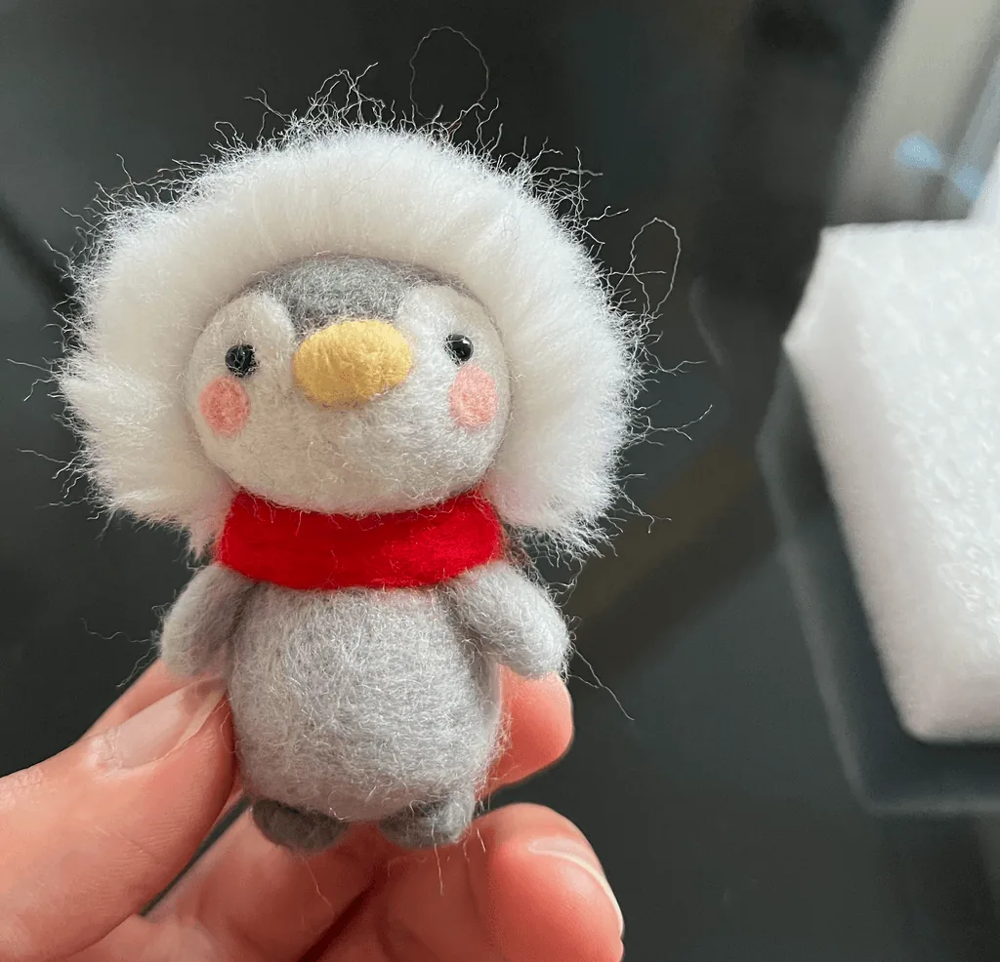
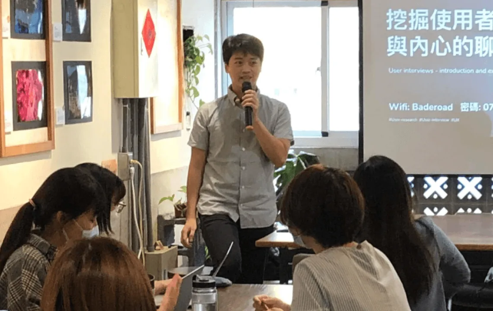

14+ yrs designing digital products · Multi-role platforms · Design systems · B2B & B2C · London
Designing clarity for complex, regulated financial products
Turning complex workflows and data-heavy systems into clear, usable experiences.


Contents
- 01 Redesigned a £9B platform for UHNW clientsFintech · Professional tool · 2025 £9B in client assets
- 02 Redesigned the Save journey to boost Autosave volume 5–6×Fintech · iOS and Android app · 2026 5–6× Autosave volume
- 03 Designed a trust layer for how Rightmove matches agents with sellersProptech · Two-sided marketplace · 2026 Self-directed concept
- 04 Improved mobile app CSAT to 89%Fintech · iOS and Android app · 2024-2025 89% mobile app CSAT
- 05 Simplified onboarding to boost efficiency by 40%Fintech · Responsive web app · 2021 40% less onboarding effort
- 06 Designed a governed rebalancing system for UHNW wealth advisorsFintech · Professional tool · 2026 AI suggests, advisors decide
- 07 Built investor confidence through portfolio healthFintech · iOS app · 2025 Risk explained, no advice
- 08 Revolut redesign concept: trip memories drive engagementFintech · Android app · 2025 Revolut concept
Earlier work spans consumer apps, B2B platforms, and enterprise systems across healthcare, hardware, and sustainability. Available on request. Get in touch →
Proven track record
Designing high-impact products used by 100M+ users, improving financial clarity and operational efficiency for enterprise teams.
People love working with me
Known for making complexity simple — calm, structured, collaborative, and fast in high-stakes environments.
“Working with Chun was a pleasure. He played a key role in shaping several of our most important internal tools and the client-facing app. His ability to translate abstract problems into elegant, user-focused designs made a real difference to our product delivery.”
“Our product had a lot of moving parts, different user types, evolving requirements, and high expectations. Chun brought calm, clarity, and fast execution. His ability to translate messy ideas into intuitive experiences was exactly what we needed.”
“Chun was a fantastic UX partner – quickly grasping complex data challenges and translating them into clear, interactive design concepts. He played a key role in developing a UX proof of concept that brought our product vision to life, and helped turn dense, technical content into user-friendly visuals to enhance both client engagement and thought leadership. A pleasure to work with.”
“It's been a pleasure collaborating with Chun for nearly four years. He transformed our design system, bridged Figma with Android APIs, and elevated both iOS and Android experiences. His work enabled a small team to maintain a 100-screen app efficiently. Beyond his skills, he's collaborative, respectful, and positive. Any team would be lucky to have him.”
“I worked with Chun at Y TREE for over 4 years. He's an exceptional UX/UI designer who built design systems for complex financial apps and delivered intuitive web and mobile experiences under tight deadlines. Efficient, detail-oriented, and highly collaborative, Chun is a huge asset to any team.”
“Chun delivered high-quality, polished design work with a strong sense of aesthetics and interface refinement. His visual direction for PowderSpark aligned seamlessly with our premium brand positioning, and his professionalism and responsiveness made a real impact on the final result.”
Writing on product & decision-making
How I approach uncertainty, trade-offs, and responsibility in product design
When building a product starts asking questions back
I came in with a dark humour concept. One conversation with Claude made me question what the product was actually asking people to face.
Designing products when ownership and boundaries are unclear
How I navigated shifting business models, responsibility, and risk in a real-world platform build.
What changed when I stepped beyond craft into leadership
A candid reflection on judgement, coordination, and the mistakes I made transitioning into a project lead role.
Beyond Design
Away from the screen, I run, organise small communities, and make things by hand. It keeps my thinking sharp, my empathy grounded — and reminds me to slow down, especially when my little one is winning the negotiation.

